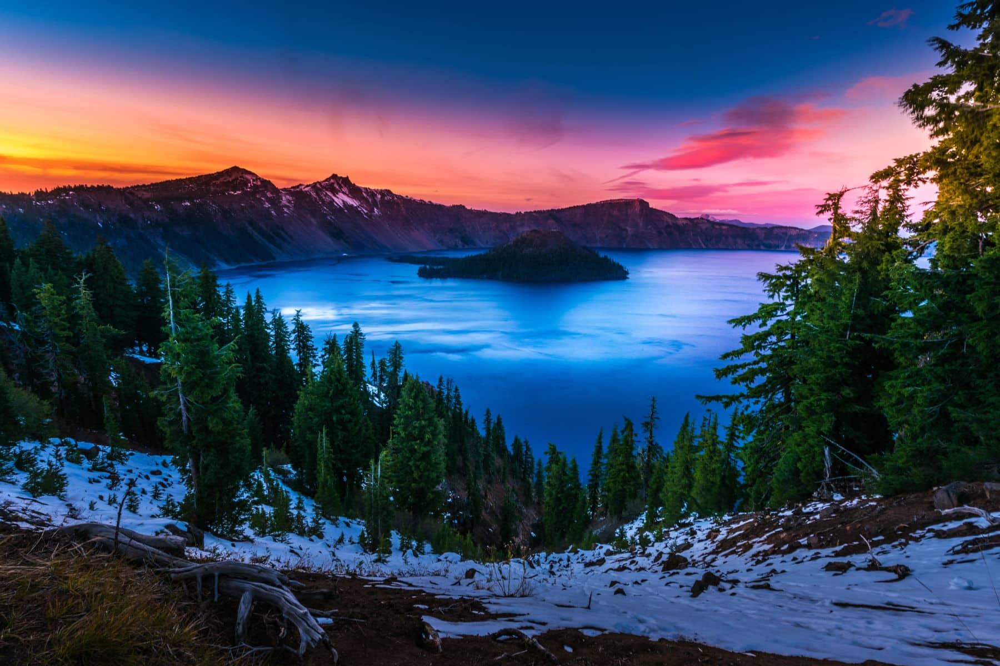

Crater Lake
Crater Lake, located in southern Oregon, is one of the most awe-inspiring natural wonders in the Pacific Northwest. Known for its brilliant blue waters and incredible depth, it is the deepest lake in the United States and the ninth deepest in the world.
Features of Crater Lake
- Wizard Island: A volcanic cinder cone rising from the lake, offering unique hiking opportunities.
- Rim Drive: A 33-mile scenic route encircling the lake with numerous viewpoints and photo stops.
- Clarity: The lake is renowned for its pristine water, often reflecting the sky and surrounding cliffs like a mirror.
Wildlife
The Crater Lake area is home to diverse wildlife, including black bears, deer, and a variety of bird species like bald eagles and Clark's nutcrackers. The lake itself hosts populations of rainbow trout and kokanee salmon.
Best Times to Visit
Crater Lake National Park is open year-round, but summer (July to September) is the best time to visit for warm weather and clear views. Winter offers a snowy wonderland for activities like cross-country skiing and snowshoeing, though access may be limited.
Plan Your Visit
The Crater Lake Visitor Center provides essential information, maps, and guides to the park. Parking and picnic areas are available, and there are several hiking trails for all skill levels. Be prepared for varying weather conditions, as temperatures can change rapidly at this elevation.